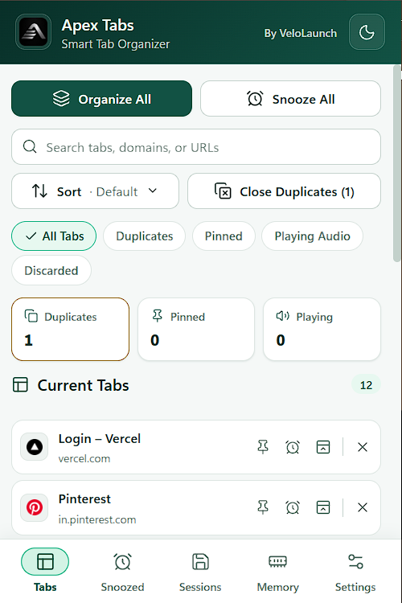

Current Tabs
See the current window clearly.
Search by title, domain, or URL, then sort by default order, title, domain, recent activity, or oldest activity. Filter for duplicates, pinned tabs, playing-audio tabs, or browser-discarded and Apex-suspended tabs.
Rows identify active, pinned, audio, duplicate, suspended, and browser-discarded state. Activate, pin, snooze, suspend, or close an individual tab from the dashboard.
- Close duplicates while keeping the active copy first, then a pinned copy when available.
- Apply a sort to the browser’s current-window unpinned tabs while keeping pinned tabs at the front.
Group eligible tabs with rules you control
When automatic grouping is enabled, Apex Tabs applies the selected domain rule or first matching custom keyword-topic rule to eligible new or updated ungrouped tabs. Under the same setting, Organize All applies that rule to eligible ungrouped tabs across all open Chrome windows. Tabs already in a Chrome group are left unchanged.
These grouping paths skip missing URLs, chrome:// pages, and chrome-extension:// pages.

Current Tabs product screenshot unavailable.